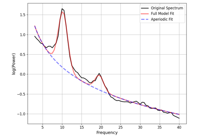

fooof.analysis.compute_pointwise_error_fg¶
- fooof.analysis.compute_pointwise_error_fg(fg, plot_errors=True, return_errors=False, **plt_kwargs)[source]¶
Calculate the frequency by frequency error of model fits from a FOOOFGroup object.
- Parameters:
- fgFOOOFGroup
Object containing the data and models.
- plot_errorsbool, optional, default: True
Whether to plot the errors across frequencies.
- return_errorsbool, optional, default: False
Whether to return the calculated errors.
- **plt_kwargs
Keyword arguments to be passed to the plot function.
- Returns:
- errors2d array
Calculated values of the difference between the data and the models. Only returned if return_errors is True.
- Raises:
- NoDataError
If there is no data available to calculate model errors from.
- NoModelError
If there are no model results available to calculate model errors from.
Examples using fooof.analysis.compute_pointwise_error_fg¶


Developmental Data Demo